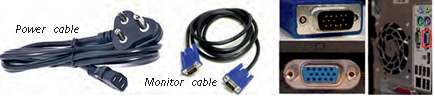
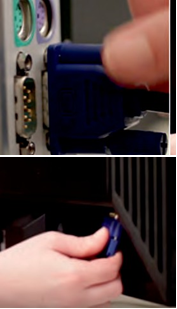
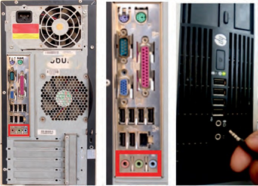
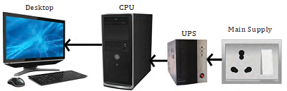
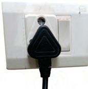
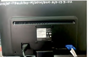

Step 8: Connect external cables to the computer
Setting up the computer system involves the complete process of establishing the proper connectivity of various parts of the computer system—input and output devices, connectivity of computer with the surge power supply. Reattach the side panels to the case. The process of connecting the external cables given below:
Locate the monitor cable
Locate the two power cable and one VGA cable or monitor cable. The VGA cable is used to connect to monitor and another point on to the back side of the cabinet. If you are having trouble finding these, refer to the instruction manual of or the computer. You can skip to ‘Step 3’, in case of all-in-one computer that is built into the monitor.

Display cable and ports
Connecting monitor
Connect one end of the cable to the monitor port on the back of the computer case and the other end to the monitor. In case of VGA cable tighten the screws on the monitor cable to secure it.
The cables will only fit in a specific way. If the cable does not fit, do not force it, otherwise the connectors might get damaged. Make sure the plug aligns with the port, then connect it. So, first identify all the cables, ports, and connectors.

Connecting VGA or monitor cable to the port on back panel of computer
Connecting keyboard
Unpack the keyboard and determine whether it uses a USB (rectangular) connector or a PS/2 (round) connector. If they have colour coded plugs that are light green and lavender, plug them into the corresponding colour-coded ports, it is more likely if they use round PS/2 connectors. If it uses a USB connector, plug it into any of the USB ports on the back of the computer.
 Connecting keyboard in PS/2 port
Connecting keyboard in PS/2 port
 Connecting keyboard in USB port
Connecting keyboard in USB port
Connecting mouse
Unpack the mouse and determine whether it uses a USB or PS/2 connector. If it uses a USB connector, plug it into any of the USB ports on the back of the computer. If it uses a PS/2 connector, plug it into the green mouse port on the back of the computer. In case of wireless mouse or keyboard, connect a Bluetooth dongle (USB adapter) in one of the USB ports of the computer. However, it is not necessary to connect an adapter for the modern computers which have built-in Bluetooth.
 Connecting mouse (a) in PS/2 port (b) in USB port
Connecting mouse (a) in PS/2 port (b) in USB port
Connecting headphones or speakers, and microphone
Connect the external speakers or headphones, to computer’s audio port (either on the front or back of the computer case). The modern computers have colour-coded ports. Speakers or headphones connect to the green port, and microphones connect to the pink port. The blue port is the line-in, which can be used with other types of devices. They can be also connected to the USB port. Some speakers, headphones, and microphones have USB connectors instead of the usual audio plug. Connect them to any USB port. Some computers have speakers or microphones built into the monitor.

Connecting speakers or headphones, and microphone
Connect the computer to a power supply
Locate the two power supply cables that came with the computer. Plug the first power supply cable into the back of the computer case and then into a surge protector. Then, using the other cable, connect the monitor to the surge protector. It is better to use an uninterruptable power supply (UPS), which acts as a surge protector and provides the back up when the power goes off.

Power connection (CPU through UPS)
Ups (uninterruptible power supply)
While working on computer, its power supply should not be interrupted. UPS is like a power bank which gives power to the computer system. So make sure to plug power cable of monitor and cabinet into the UPS power output socket. Ensure the connection is proper.
Plug the surge protector
Plug the surge protector into a wall outlet after finishing the connectivity of all the parts and peripherals, plug the surge protector into the main power supply. You may also need to turn on the surge protector if it has a power switch.

Plug the surge protector into a wall outlet
Connecting printer, scanner, webcam
To connect the peripherals such as printer, scanner, webcam, identify the respective connectors of the cable and port on the cabinet. Plug in the connectors of these peripherals in respective ports. Correctly plugging in will recognise the peripherals as they are plug and play devices.
It may be required to install their software drivers for them to function properly. Use the instructions included with the device to install them if necessary. Installation of peripherals is optional, and it be can added at any time; it may not be required during the initial setup of your computer.
Checklist the following before starting the computer :
- VGA cable of monitor is connected to the cabinet or not.
- Power cable of monitor and cabinet has been plugged into the UPS power output socket. Make sure monitor is connected to the power supply or not.
- Keyboard and mouse both are connected to their proper ports.

Proper connectivity of parts of computer system


 Unscrew cabinet
Unscrew cabinet
 Pull cabinet side cover
Pull cabinet side cover
 Insert power supply
Insert power supply
 Screw the heat sink
Screw the heat sink
 Screw the heat sink fan assembly
Screw the heat sink fan assembly
 Memory slot
Memory slot
 Lay the motherboard over the standoffs
Lay the motherboard over the standoffs
 Insert hard disk
Insert hard disk
 Tighten screws of HDD
Tighten screws of HDD
 Plug-in 20-pin ATX power connector to motherboard
Plug-in 20-pin ATX power connector to motherboard
 Plug-in 4-pin AUX power connector to motherboard
Plug-in 4-pin AUX power connector to motherboard
 Plug-in 15-pin connector to HDD
Plug-in 15-pin connector to HDD